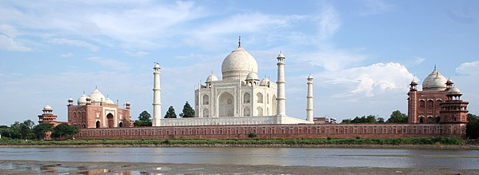
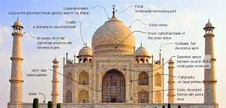
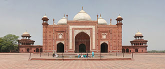

It was built by Mughal Emperor Shah Jahan in memory of his wife Mumtaz Mahal with construction starting in 1632 AD and completed in 1648 AD, with the mosque, the guest house and the main gateway on the south, the outer courtyard and its cloisters were added subsequently and completed in 1653 AD.
The Taj Mahal, a mausoleum of white marble, was built in Agra, India, between 1631 and 1648 in memory of emperor Shah Jahan's favorite wife. Designated by UNESCO as a world heritage site, the Taj Mahal is admired across the world as a masterpiece of Indian art.
The Taj Mahal complex is bordered on three sides by crenellated red sandstone walls; the side facing the river is open. Outside the walls are several additional mausoleums, including those of Shah Jahan's other wives, and a larger tomb for Mumtaz's favourite servant.
